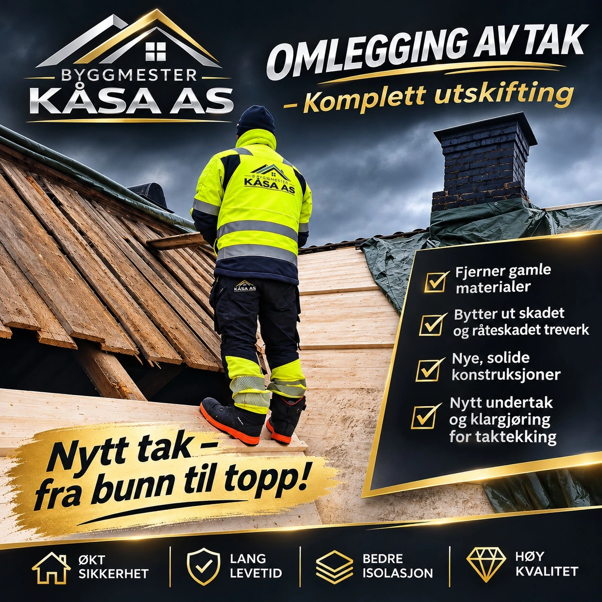

Forberedelse og underlag
Demontering og klargjøring av avtalte deler, samt arbeid med underlag og oppbygging etter prosjektets løsning.
Et godt tak starter med riktig oppbygging og nøyaktige detaljer. Byggmester Kåsa AS utfører takarbeid og tilhørende tømrerarbeider på hele Østlandet. Vi vurderer takets tilstand, byggets utforming og ønsket resultat før vi avklarer omfanget.

Oppdrag kan omfatte forberedelser, undertak, sløyfer og lekter, takstein, beslag, vindskier, takrenner og tilhørende fasadearbeid. Den konkrete leveransen beskrives i tilbudet.
Demontering og klargjøring av avtalte deler, samt arbeid med underlag og oppbygging etter prosjektets løsning.
Tømrerarbeid knyttet til lekting og montering av takstein der dette inngår i oppdraget.
Tilpasning av takfotbeslag, vindskibeslag og detaljer ved overganger etter avtalt omfang.
Utskifting og tilpasning av vindskier, bord og andre tilhørende trekonstruksjoner.
Montering eller utskifting av takrenner, rennekroker, nedløpsrør og tilhørende detaljer.
Gjennom BK Stillas kan vi også vurdere stillasbehov for adkomst ved takarbeid og fasadearbeid.
Vi ønsker tydelige avklaringer før oppstart, slik at alle vet hva som inngår og hva som skal leveres.
Vi ser på bygget, taktypen, adkomst og hva som skal skiftes eller utbedres.
Vi avklarer materialer, detaljer, stillasbehov, omfang og hva som inngår i leveransen.
Arbeidet planlegges og gjennomføres etter avtalen, med oppmerksomhet på underlag, overganger og avslutninger.
Finner du ikke svaret du leter etter, tar vi gjerne en prat.
Vi utfører takarbeid og tømrerarbeid knyttet til takomlegging, inkludert lekting og takstein når dette inngår i avtalen.
Ja, vi kan utføre tilhørende arbeid med beslag, vindskier, takrenner og nedløp etter avtalt omfang.
Behovet avhenger av bygget og arbeidsoppgaven. Gjennom BK Stillas kan vi vurdere stillasløsning i forbindelse med prosjektet.
Send adresse, bilder av taket fra flere sider, omtrentlige mål, hva du ønsker gjort og ønsket tidspunkt. Vi avklarer om befaring er nødvendig.
Send oss en kort beskrivelse, prosjektsted og gjerne bilder eller tegninger. Vi tar en uforpliktende prat om behovet og aktuelle løsninger.